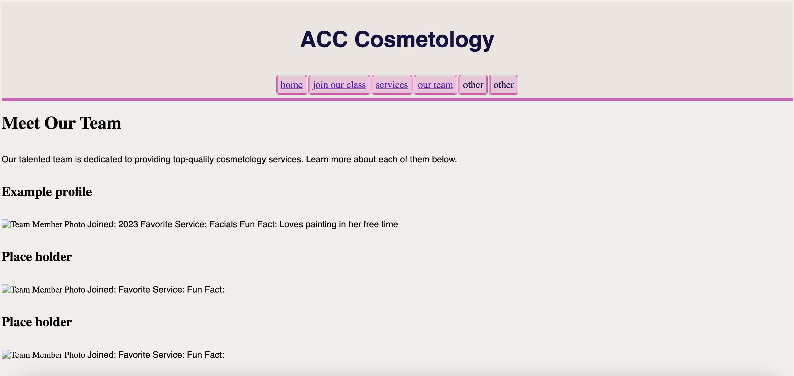
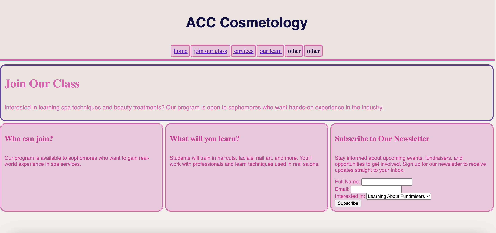

Reflection on Website Development
Website & Repository Links
Website Link:
View Website
GitHub Repository:
View Repository
Screenshots
Below are the screenshots of the two pages I developed:


Form Description
For the Join Our Class page, I created a form that lets users to enter their email address and choose their interests before subscribing. The form includes:
-
Text Input (Full Name): Allows users to enter their full name.
-
Email Input: Ensures that users enter a valid email address.
-
Dropdown Selection (Interests): Users can select from learning about fundrasiers, joining our class, or beauty tips.
-
Submit Button: Sends the form data to the server.
The form uses the post request method to securely send user data to the backend for processing.
Reflection on the Development Process
This project involved collaboration with my partneers, requiring communication and version control using Git. Below are some key takeaways:
-
Code Sharing: Sharing code through GitHub worked well, but we had to coordinate to avoid conflicts. We discussed our changes before pushing updates.
-
Pulling and Merging: At first, we encountered some merge conflicts due to changes at the same time in shared files. We resolved them by carefully reviewing conflicting lines and maintaining consistency.
-
Branch-Based Development: Creating separate branches for features was extremely helpful. Using pull requests allowed for code reviews before merging, improving code quality and preventing accidental overwrites.
Overall, this project reinforced my understanding of HTML forms, Git workflows, and collaborative development. It also highlighted the importance of clear documentation and structured communication in a team project.